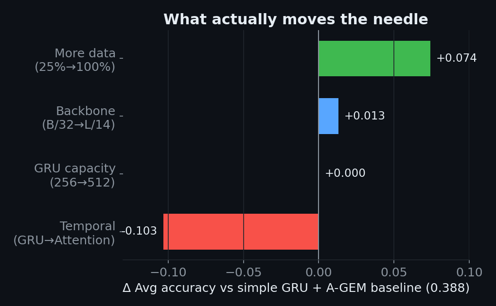
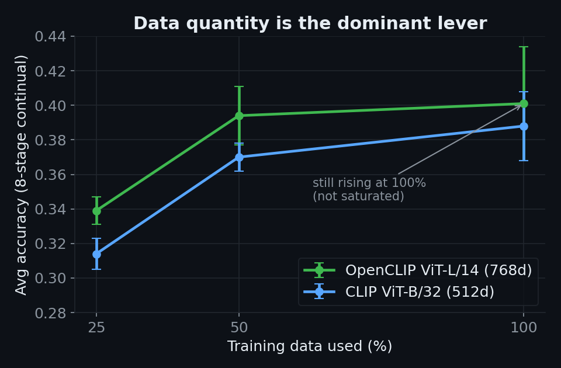

coad-mini · Something-Something V2 (48 classes, 8 sequential stages) · CLIP + GRU + A-GEM
[Name] · [Student ID] · [Course] · 2026
When a video action recognizer learns new action classes sequentially (in stages), it catastrophically forgets earlier ones. We study how to mitigate this forgetting, and — once mitigated — what the next bottleneck to accuracy actually is.
A compact pipeline trained stage by stage; A-GEM projects each gradient so updates do not increase loss on a replay memory of past classes.
video → 16 uniform frames → CLIP ViT-B/32 (512-d) → GRU classifier → 8-stage continual evaluation


| Lever | Δ Avg Acc | Verdict |
|---|---|---|
| GRU capacity (256→512, +layers) | ~0.000 | no gain |
| Backbone (CLIP B/32 → OpenCLIP L/14) | +0.013 | within noise |
| Temporal model (GRU → GRU + Attention) | −0.103 | worse (+forgetting) |
| Training data (25% → 100%) | +0.06–0.07 | dominant lever |
On top of the model we built an interactive demo (live): realtime captioning (Baseline vs A-GEM, upload or webcam), few-shot enrollment — teach a brand-new action from a few clips that appears in the live caption instantly without forgetting the rest — and OOD / anomaly detection.